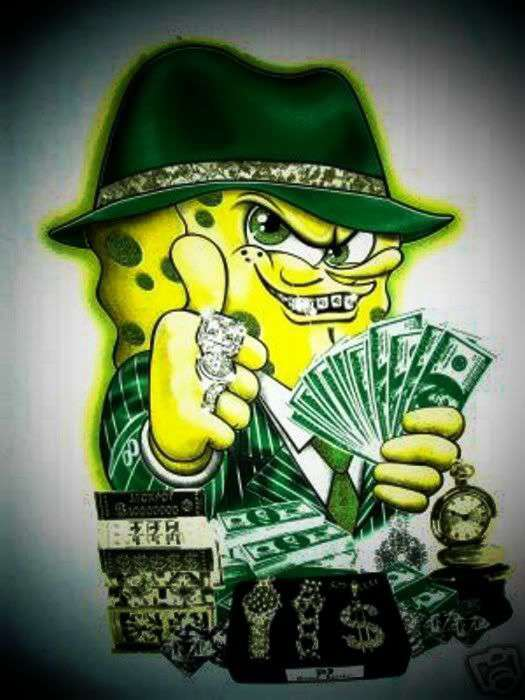
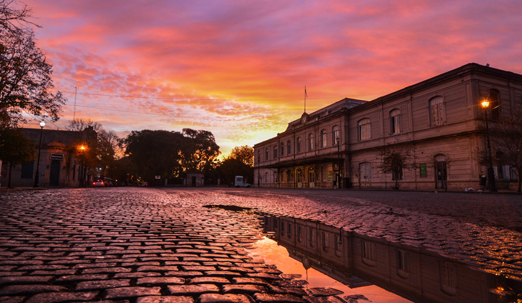
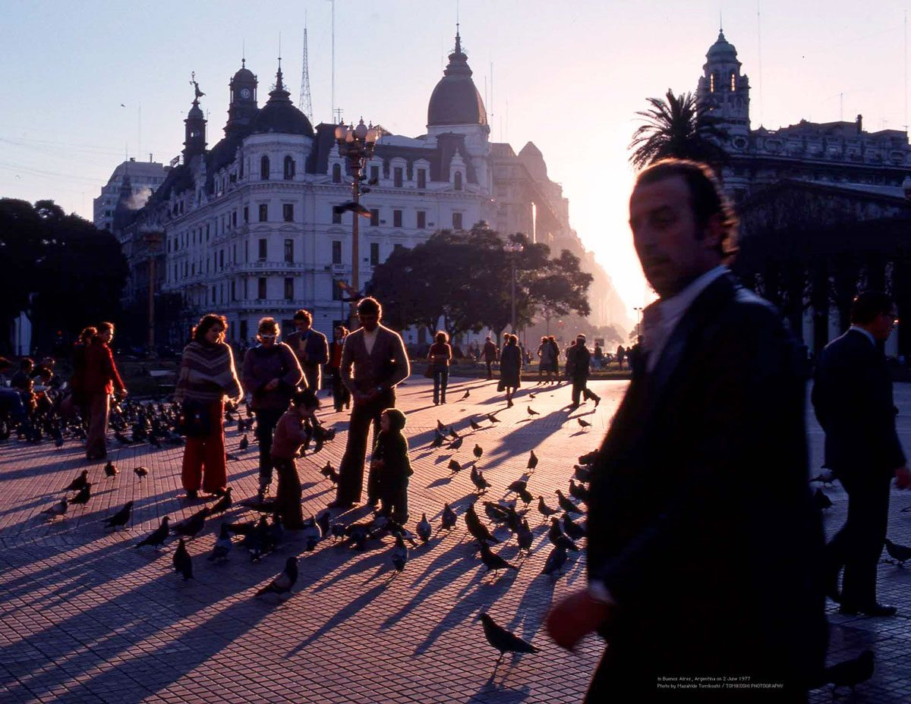
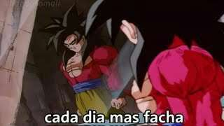
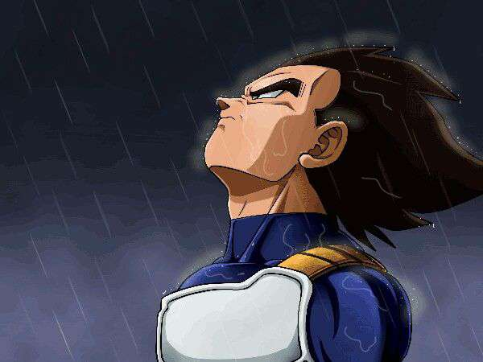

Catálogo de dibujos
Elegí una categoría para ver los dibujos correspondientes. El cambio de categoría es completamente estático: no hay ningún script ejecutándose, solo botones de opción (radio) ocultos y selectores CSS.




